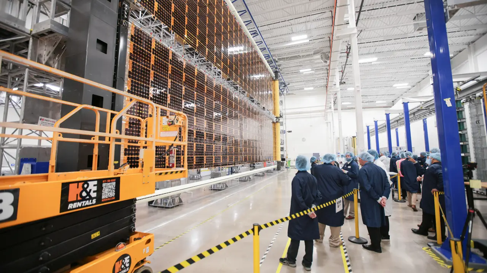

레드와이어를 보는 주주가 지금 가장 궁금해해야 할 질문은 “우주 인프라 회사인가, 방산 드론 회사인가”가 아닙니다. 더 중요한 질문은 Edge Autonomy 인수 이후 커진 매출과 백로그가 실제 현금흐름으로 바뀔 수 있는지입니다. 우주 구조물과 위성 부품은 멋진 이야기로 보이고, 무인 항공 시스템은 방산 테마로 빠르게 소비되지만, 주주에게 오래 남는 것은 계약이 납품되고 비용이 통제된 뒤의 현금입니다.
레드와이어는 순수 발사체 회사가 아닙니다. 위성 전력 시스템, 우주 구조물, spacecraft 구성품, 자율 시스템, 방산 기술을 함께 다루는 공급자입니다. 그래서 로켓 랩처럼 발사 횟수로만 보기 어렵고, 플래닛 랩스처럼 데이터 구독 매출만으로 설명하기도 어렵습니다. 회사의 핵심은 우주와 방산 고객이 필요로 하는 부품과 시스템을 팔고, 그 계약을 일정대로 수행해 마진을 남기는 일입니다.
2026년 1분기 숫자는 이 회사를 다시 보게 만듭니다. 레드와이어는 매출 9,697만 달러, 매출총이익률 26.6%, 계약 백로그 4억9,810만 달러, 수주 대비 매출 비율 1.92를 발표했습니다. 동시에 조정 EBITDA는 -920만 달러, 잉여현금흐름은 -1,270만 달러였습니다. 한쪽에는 분명한 성장 신호가 있고, 다른 한쪽에는 아직 끝나지 않은 수익성 검증이 있습니다.
매출 급증은 같은 품질의 성장이 아닙니다

레드와이어의 2026년 1분기 매출은 전년 동기 대비 57.9% 늘었습니다. 숫자만 보면 고성장 우주 기업처럼 보입니다. 그러나 투자자가 먼저 나눠 봐야 할 것은 유기 성장과 인수 효과입니다. Edge Autonomy가 들어오면서 방산 기술 부문이 커졌고, 2026년 1분기 방산 기술 매출은 4,430만 달러까지 올라왔습니다. 같은 기간 우주 부문 매출은 5,267만 달러였습니다.
이 구성은 레드와이어의 얼굴이 달라졌다는 뜻입니다. 예전에는 우주 구조물과 전력 시스템을 중심으로 설명되는 경우가 많았지만, 이제는 방산 자율 시스템과 무인 항공 플랫폼도 함께 봐야 합니다. 이 변화가 긍정적이려면 매출 규모만 커지는 데서 끝나면 안 됩니다. 인수한 사업이 높은 주문을 유지하고, 기존 우주 사업과 고객·기술·생산 측면에서 실제 시너지를 만들어야 합니다.
매출총이익률 26.6%는 전년 동기보다 크게 좋아진 신호입니다. 다만 이 숫자가 지속될지는 아직 더 봐야 합니다. 우주와 방산 계약은 고객 요구사항이 바뀌거나 납품 일정이 밀리면 비용이 빠르게 늘 수 있습니다. 특히 고정가격 계약에서는 원가를 잘못 잡으면 매출이 늘어도 이익이 줄어드는 일이 생깁니다. 매출 증가율보다 계약의 마진 품질을 더 먼저 확인해야 하는 이유입니다.
Edge 인수는 회사의 얼굴을 바꿉니다
관련 영상
레드와이어 우주 인프라 사업을 설명하는 한국어 롱폼 분석 영상
Edge Autonomy 인수는 레드와이어를 단순 우주 부품사에서 우주와 방산 자율 시스템을 함께 가진 회사로 바꿨습니다. Stalker 같은 무인 시스템은 해병대와 육군 네트워크 통합 수요와 연결됩니다. 우주 인프라가 위성 전력, 구조물, spacecraft 관련 부품을 뜻한다면, 방산 기술은 지상과 공중에서 움직이는 자율 플랫폼까지 포함합니다. 두 영역은 고객이 겹칠 수 있지만 매출 인식, 비용 구조, 경쟁 구도는 다릅니다.
주주가 놓치기 쉬운 부분은 바로 이 지점입니다. 레드와이어를 우주 테마로만 보면 방산 기술 부문의 성장과 위험을 과소평가하게 됩니다. 반대로 드론 테마로만 보면 회사가 오랫동안 축적한 우주 인프라 기술과 백로그의 의미를 놓치게 됩니다. 이 회사는 어느 한 단어로 깔끔하게 정리되지 않습니다. 그래서 숫자를 사업부별로 나눠 읽는 습관이 필요합니다.
Edge 인수는 손익에도 흔적을 남겼습니다. 2026년 1분기 순손실 7,650만 달러에는 인수와 관련된 인센티브 유닛 가속 베스팅에 따른 4,250만 달러 주식보상비 등 비반복 항목이 크게 들어갔습니다. 이 항목을 모두 반복 비용처럼 보면 회사가 지나치게 나빠 보일 수 있습니다. 하지만 반대로 비반복 비용이라는 이유만으로 수익성 문제가 사라진다고 봐도 안 됩니다. 조정 EBITDA가 아직 적자이고 잉여현금흐름도 적자이기 때문입니다.
좋은 인수는 매출을 키우는 데서 끝나지 않습니다. 고객 접근성을 넓히고, 생산 효율을 높이고, 영업 조직이 더 큰 계약을 가져오게 해야 합니다. 레드와이어가 Edge를 잘 통합하고 있다면 이후 분기에는 방산 기술 매출의 성장뿐 아니라 매출총이익률, 조정 EBITDA, 운전자본 부담에서도 변화가 보여야 합니다. 주주가 봐야 할 것은 인수 발표가 아니라 인수 뒤의 손익계산서와 현금흐름표입니다.
4억9810만 달러 백로그는 납품표입니다
레드와이어가 제시한 계약 백로그 4억9,810만 달러는 중요한 숫자입니다. 이 중 우주 부문 백로그는 3억5,970만 달러, 방산 기술 부문 백로그는 1억3,840만 달러입니다. 백로그가 늘었다는 것은 고객 수요가 사라지지 않았다는 뜻입니다. 수주 대비 매출 비율이 1.92라는 점도 분기 동안 매출로 인식한 금액보다 새로 확보한 계약이 더 컸다는 뜻이라 긍정적입니다.
다만 백로그는 현금이 아닙니다. 회사가 공시에서 설명하듯 백로그는 아직 수행하지 않은 확정 계약의 남은 수행 의무입니다. 납품이 지연되거나 고객 예산이 바뀌거나 계약이 취소되면 숫자는 달라질 수 있습니다. 다년 계약 중 일부는 매년 예산 배정에 영향을 받습니다. 그래서 백로그는 “언젠가 들어올 돈”이 아니라 “관리해야 할 납품표”로 읽는 편이 더 안전합니다.
Andromeda IDIQ처럼 큰 계약 한도가 언급될 때도 같은 기준이 필요합니다. IDIQ는 대형 기회를 뜻하지만 전체 한도액이 곧바로 확정 매출이 되는 구조는 아닙니다. 실제 task order가 얼마나 나오고, 어느 시점에 매출로 인식되며, 어느 마진으로 수행되는지가 더 중요합니다. 우주와 방산 분야에서는 계약 규모보다 계약의 성격이 주주 수익률을 가르는 일이 많습니다.
레드와이어의 백로그를 평가할 때는 세 가지를 봐야 합니다. 첫째, 우주와 방산 기술 중 어느 부문에서 백로그가 더 빠르게 매출로 바뀌는지입니다. 둘째, 매출로 바뀌는 과정에서 매출총이익률이 유지되는지입니다. 셋째, 계약자산과 재고가 과도하게 늘지 않는지입니다. 백로그가 커질수록 운전자본 부담도 커질 수 있기 때문에, 성장과 현금 소모를 같은 화면에 놓고 봐야 합니다.
현금흐름 전환은 아직 주주 숙제입니다
2026년 1분기 말 레드와이어의 총 유동성은 1억7,520만 달러입니다. 이 중 현금 및 현금성 자산은 1억4,450만 달러이고, 사용 가능한 기존 신용한도는 3,000만 달러입니다. 유동성이 개선됐다는 점은 분명히 긍정적입니다. 우주와 방산 기술 회사는 계약을 따기 전에도 연구개발, 보안 요건, 재고, 인력, 생산 설비에 돈을 써야 하므로 현금 완충 장치가 중요합니다.
그러나 유동성은 시간을 벌어 줄 뿐, 사업 모델을 증명해 주지는 않습니다. 레드와이어의 2026년 1분기 영업현금흐름은 -667만 달러였고, 잉여현금흐름은 -1,270만 달러였습니다. 전년 동기보다 좋아진 부분은 있지만 아직 플러스 현금흐름을 안정적으로 보여준 것은 아닙니다. 연간 매출 전망 4억5,000만 달러에서 5억 달러를 달성하더라도, 그 매출이 현금흐름으로 바뀌는지가 별도 질문입니다.
주주 입장에서 가장 좋은 시나리오는 단순합니다. 백로그가 매출로 빠르게 전환되고, 매출총이익률이 20%대 중후반 이상에서 버티며, 인수 관련 일회성 비용이 줄고, 조정 EBITDA와 잉여현금흐름이 순서대로 개선되는 흐름입니다. 이 경우 레드와이어는 “테마가 좋은 적자 우주주”에서 “우주와 방산 기술 수요를 수익으로 바꾸는 공급자”로 평가받을 수 있습니다.
반대로 나쁜 시나리오도 분명합니다. 백로그는 늘지만 납품 일정이 밀리고, Edge 통합 비용이 길어지고, 고정가격 계약 원가가 올라가고, 현금흐름이 계속 적자라면 시장은 매출 성장률보다 자금조달과 희석 가능성을 먼저 보게 됩니다. 우주와 방산 테마는 기대가 커지는 만큼 실망도 빠르게 가격에 반영됩니다. 그래서 레드와이어는 좋은 뉴스보다 다음 실적표가 더 중요합니다.
결론적으로 RDW를 볼 때 핵심은 “우주 인프라가 뜬다”가 아닙니다. 레드와이어가 우주 구조물과 방산 자율 시스템이라는 두 축을 실제 수익성으로 묶어낼 수 있는지가 핵심입니다. 2026년에는 매출 전망보다 백로그 전환, 매출총이익률, 조정 EBITDA, 잉여현금흐름, Edge 통합 비용을 같은 순서로 확인해야 합니다. 이 순서를 놓치지 않으면 레드와이어가 성장주인지, 아직 검증 중인 테마주인지 더 선명하게 보입니다.
이 글은 특정 종목의 매수나 매도 추천이 아닙니다. 투자 판단 전에는 Redwire의 최신 공시, 분기 실적 자료, SEC 보고서, 계약 공시와 고객 예산 변화를 함께 확인해 주세요.